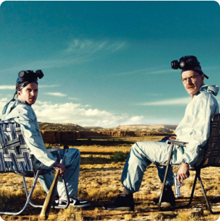
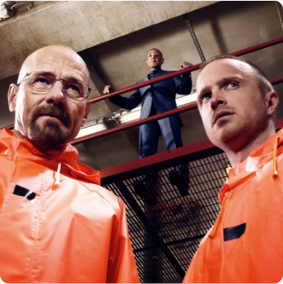
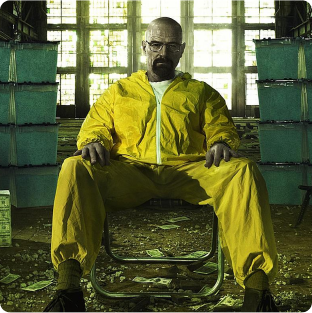

1ª TemporadaÀ medida que Walter constrói seu império, sua esposa começa a suspeitar do seu comportamento. A polícia federal tenta descobrir quem é o novo cabeça. Veja os Episódios |
|
|  |
2ª TemporadaÀ medida que Walter constrói seu império, sua esposa começa a suspeitar do seu comportamento. A polícia federal tenta descobrir quem é o novo cabeça. Veja os Episódios |
3ª TemporadaÀ medida que Walter constrói seu império, sua esposa começa a suspeitar do seu comportamento. A polícia federal tenta descobrir quem é o novo cabeça. Veja os Episódios |
|
|  |
4ª TemporadaÀ medida que Walter constrói seu império, sua esposa começa a suspeitar do seu comportamento. A polícia federal tenta descobrir quem é o novo cabeça. Veja os Episódios |
|  |
5ª TemporadaÀ medida que Walter constrói seu império, sua esposa começa a suspeitar do seu comportamento. A polícia federal tenta descobrir quem é o novo cabeça. Veja os Episódios |